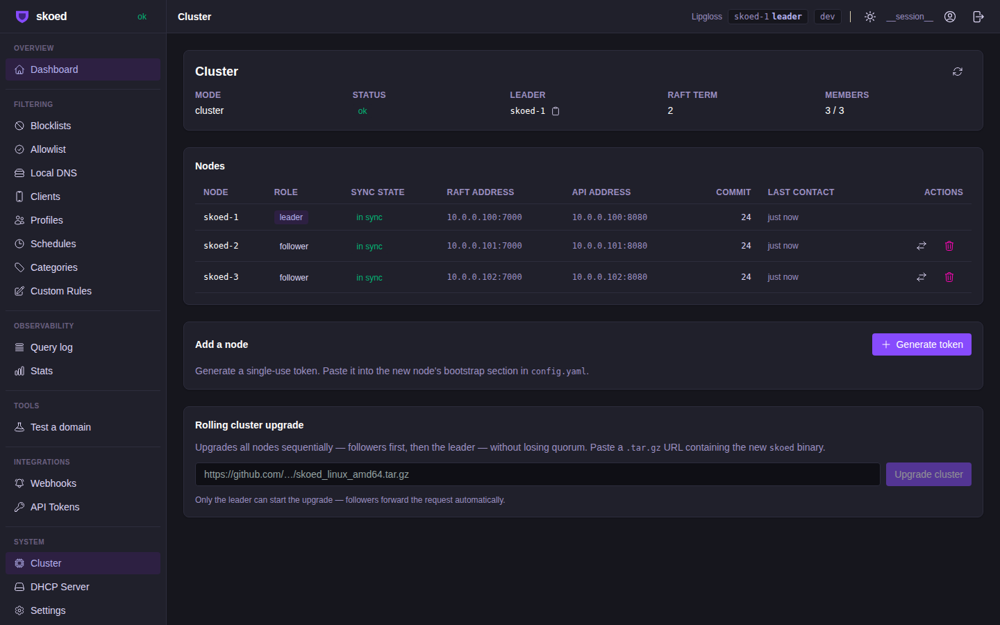
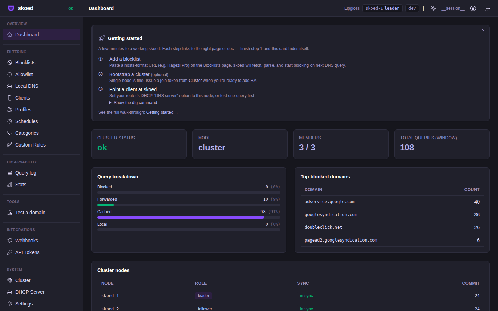
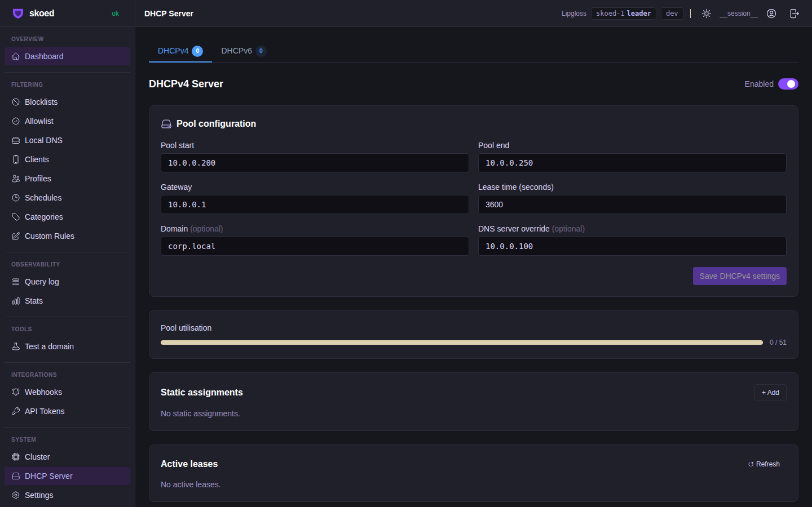
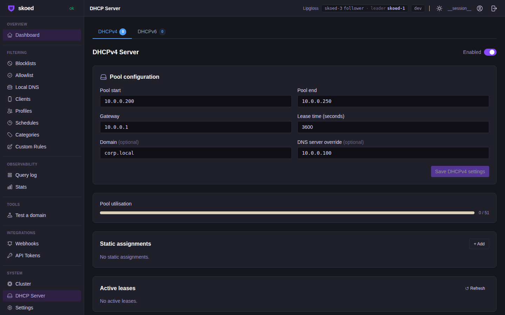
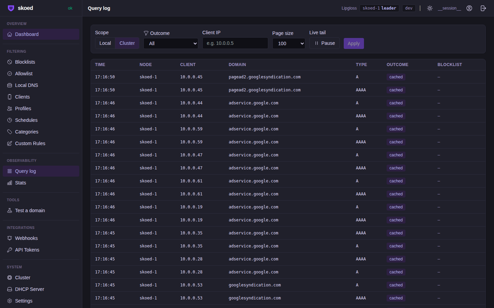
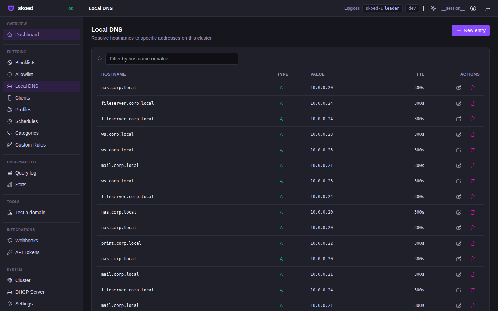
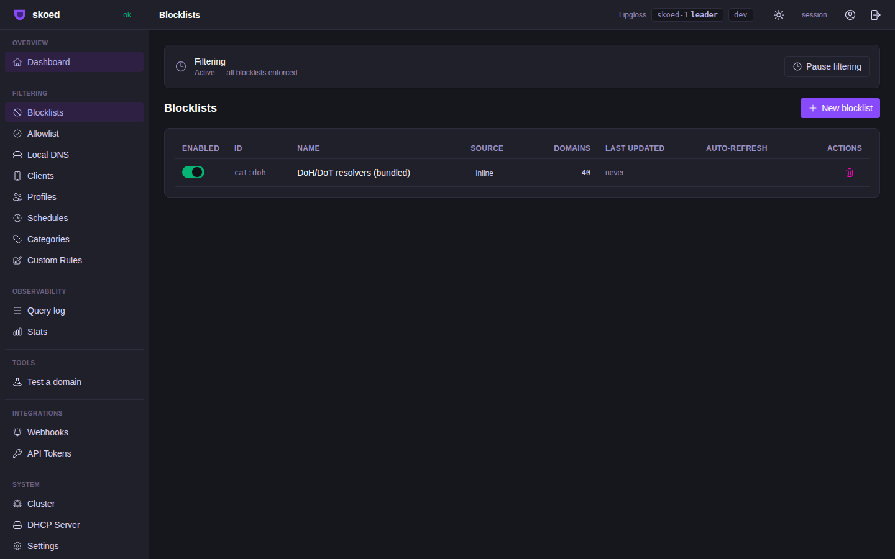
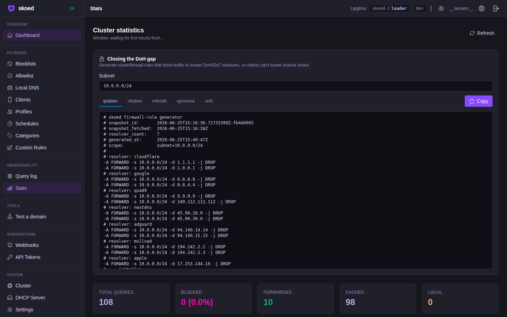
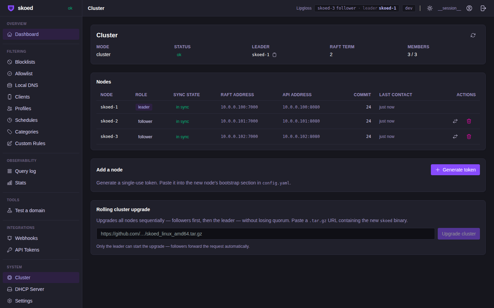
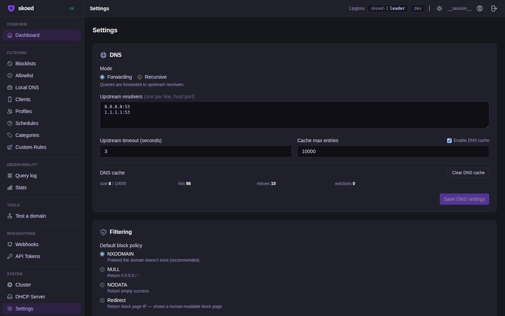

Proxmox 3-node cluster · 60 concurrent clients · Raft failover mid-storm · Disaster Recovery · 2026-06-25
| Status | Check | Time |
|---|---|---|
| Phase 0 — Setup | ||
| ✓ | Pool: 10.0.0.10–10.0.0.89 (80 IPs), lease=60s | 15:08:21 |
| ✓ | Upstream DNS: 8.8.8.8 + 1.1.1.1 configured | 15:08:21 |
| ✓ | Local DNS entries: 5 added (nas, mail, print, ws, fileserver) | 15:08:21 |
| Phase 1 — DORA Storm (60 clients) | ||
| ✓ | DORA storm: 60/60 clients leased in 5s WS×30 IoT×15 Mobile×15 | 15:08:58 |
| i | Peak pool utilisation: 60 / 80 IPs (75%) | 15:08:58 |
| Phase 2 — DNS Storm (480 QPS) | ||
| ✓ | DNS storm: 60/60 CTs running queries — 16 domains/cycle, 8 qps/CT = 480 QPS cluster-wide | 15:10:48 |
| i | Traffic mix: 6 allowed + 5 blocked + 5 local DNS entries | 15:10:48 |
| Phase 3 — Multi-node Sysadmin | ||
| ✓ | Sysadmin@10.0.0.100 (leader): 60 leases, 10000 queries in log, 0 blocked | 15:12:53 |
| ✓ | Sysadmin@10.0.0.101 (follower): 60 leases, 10000 queries in log, 0 blocked | 15:12:53 |
| ✓ | Sysadmin@10.0.0.102 (follower): 60 leases, 10000 queries in log, 0 blocked | 15:12:53 |
| ✓ | Multi-node consistency: 60 / 60 / 60 leases (leader-forward proxy verified) | 15:12:53 |
| Phase 4 — API Performance under Load | ||
| ✓ | API perf under combined DHCP+DNS load: avg 3ms max 6ms (60 requests, 3 nodes) | 15:13:24 |
| Phase 5 — Raft Failover mid DNS storm | ||
| i | Leader 10.0.0.100 (CT 200) stopped mid DNS storm | 15:13:25 |
| ✓ | New leader elected: 10.0.0.102 in 6434ms | 15:13:31 |
| ✓ | DNS traffic resumed post-failover: new leader 10.0.0.102 received 10000 queries | 15:13:46 |
| ✓ | Post-failover lease data on 10.0.0.101: 60 leases visible | 15:13:46 |
| ✓ | Post-failover lease data on 10.0.0.102: 60 leases visible | 15:13:46 |
| Phase 6 — Lease Renewal Flood | ||
| ✓ | Lease renewal flood: pool refilled to 60/60 clients in 5s post-failover | 15:14:26 |
| Phase 7 — New Clients Post-Failover | ||
| ✓ | New clients post-failover: 5 new leases from new leader 10.0.0.102 (total now 65) | 15:15:13 |
| ✓ | Survivor nodes agree on lease data: 65 / 65 | 15:15:13 |
| Phase 8 — Full 3-Node Recovery | ||
| ✓ | Full 3-node cluster recovered — all nodes have a leader | 15:15:22 |
| ✓ | Post-recovery lease consistency: 65 / 65 / 65 on all 3 nodes | 15:15:22 |
| Phase 9 — Disaster Recovery (destroy all → reprovision from backup) | ||
| ✓ | DR snapshot: dns=20 bl=1 al=0 | 15:15:57 |
| ✓ | DR backup (config export): 1286 bytes | 15:15:59 |
| ✓ | DR: all 3 containers destroyed (pct=gone, api=unreachable) | 15:16:26 |
| ✓ | DR provisioned: CT200 (skoed-1) ready | 15:16:37 |
| ✓ | DR import done: config restored successfully | 15:16:39 |
| ✓ | DR check A (1-node): local_dns=20 ✓ blocklists=1 ✓ allowlist=0 ✓ | 15:16:54 |
| ✓ | DR provisioned: CT201 (skoed-2) ready and joined | 15:16:58 |
| ✓ | DR check B (2-node): skoed-2 local_dns=20 ✓ blocklists=1 ✓ allowlist=0 ✓ | 15:17:08 |
| ✓ | DR provisioned: CT202 (skoed-3) ready and joined | 15:17:13 |
| ✓ | DR complete: 3-node cluster rebuilt from backup — all nodes consistent (dns=20 bl=1 al=0) | 15:17:23 |
| Phase 10 — Cleanup | ||
| ✓ | All test CTs destroyed in 20s | 15:19:25 |
| ✓ | Local DNS entries removed | 15:19:25 |
| ✓ | Pool restored to 10.0.0.200–10.0.0.250 (3600s lease) | 15:19:25 |
DHCP storm 60 / 60 clients leased in 5s Peak utilisation: 75% (60/80 IPs) DNS storm 480 QPS cluster-wide Round-robin across 3 nodes API latency avg 3ms / max 6ms 60 requests, 3 nodes, under full load Raft failover 6434ms election DNS resumed immediately on new leader DR recovery 1286-byte backup < 50s to full 3-node cluster Client DNS 90610 successful / 88878 failed Failures = election blackout window (~6.4s)









